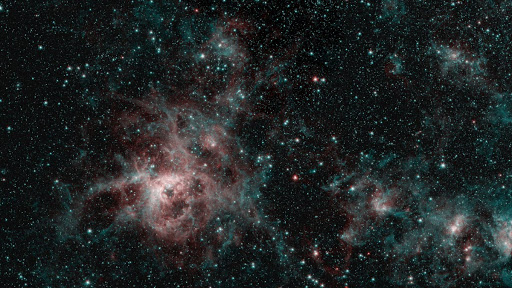

- 특징
- 취미
- 논란
- 글쓰니:찌야니
- 참고문헌: 규환피디아, '골든 스눕스 배 제 19호', 2020.03.17, p69~74
- 후원:골든스눕스컴퍼니
논란
“세상을 놀라게 하다”
그는 현재 뛰어난 지식으로 여러 전문가들의 촉망을 받고 있다.
그런 와중에 하나의 가설을 제기했는데, 아직까지 명백한 진실로 확정되지 않았지만 실제로 맞을 가능성이 아주 높다고 평가받는 가설이다.
바로 만물 정자(情子)론이다. 그의 소중이의 크기는 아직 인류의 기술로 측정할 수 없는 상황에서 그는 우주의 수 많은 별들이 사실은 자신의 정자라고 발언했다.
이는 과거에 이름을 떨친 유명한 학자들(아인슈타인, 폰 노이만, 허블, 갈릴레오 갈릴레이, 토머스 에디슨, 제임스 D. 왓슨, 엔리코 페르미, 찰스 다윈 등)이 주장한 내용과 상당히 부합하는 점들이 많아 지금 학회에서 가장 열띤 토론중이다.
이에 대해 많은 학자들은 “인류는 그럼 무엇이 되는가?“처럼 인류의 존엄성에 관해서 연구중이다.

”콧물“
그의 주장으로, 그의 콧물은 그 어떤 지구상의 물질보다 순결하고 고귀하다고 한다.
이에 대해서 수 많은 학자들은 활발하게 연구를 하는중이다.
하지만 이것은 거짓으로 밝혀졌는데, 과거에 ”찌야니“라는 이름의 한 인플루언서가 누황코의 콧물에 직접적으로 접촉을 하였고(ㅅㅂ), 그 결과 매우 더러운 액체라고 주장하며 여러 증거들을 보여주었다.
이는 현대 과학의 원칙과 위배되는 점이 거의 없어 결국엔 순결하지는 않다고 종결되었다.
이로 인해서 ”누황코가 항상 옳은 것은 아니다”라며 과거의 만물정자론이 다시 대두되었다.